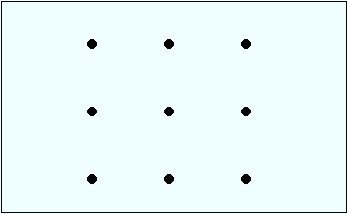

Try Out Your Problem Solving Skills
•
The
“Calvin & Hobbes” Game
•
The
Water Jar Problem
(Luchins, 1942)
•
The “9 Dots” Problem
–
Can you connect all 9 of these dots by drawing 4 straight
lines, without lifting your pencil from the page?
–
Give up? Here is a
solution
.
–
•
